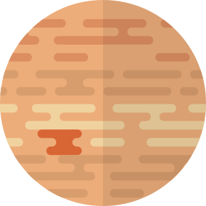
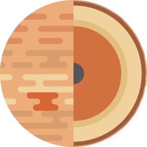

Júpiter
Júpiter é o quinto em relação ao Sol e o maior do Sistema Solar. É um gigante gasoso com uma massa duas vezes e meia a de todos os outros planetas do Sistema Solar combinados, mas menos de um milésimo da massa do Sol.
Júpiter tem um núcleo muito difuso que se mistura em seu manto. Uma possível causa é um impacto de um planeta com cerca de dez massas terrestres alguns milhões de anos após a formação de Júpiter, que teria rompido um núcleo Joviano originalmente sólido.
A característica mais conhecida de Júpiter é a Grande Mancha Vermelha, uma tempestade anticiclônica persistente localizada 22 ° ao sul do equador. Sabe-se que existe desde pelo menos 1831 e possivelmente desde 1665.
- rotação
9,93 horas
- Translação
11,86 anos
- Raio
69.911 km
- Temperatura média
-108 °C